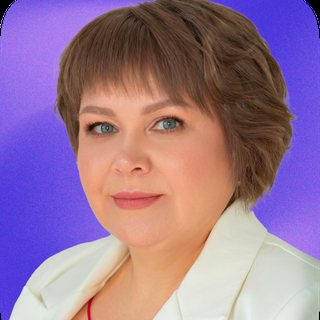

Анна Аликберова
Эксперт по системе «Честный знак», бывший аналитик, её компания ведёт кабинеты маркировки, сопровождает белый импорт и ВЭД.
Новое на YouTube-канале wbcom
 ▶
▶ ▶
▶Даниил Лебедев · Сколько денег нужно, чтобы открыть свой бренд одежды в 2026 году?
15–16 мая 2026
Честный знак и белый импорт: проверки, штрафы, СПОТ
Спикер разбирает, как государство через «Честный знак» контролирует импортёров и «псевдопроизводителей»: разрешительные документы, ОКВЭД, экосбор, перемаркировка, СПОТ. Главный вывод: нужно навести порядок в документах и кабинете маркировки до проверок, потому что маркетплейсы и надзор уже сверяют данные.
- 04:51Код ТН ВЭД определяйте с таможенным аналитиком или брокером до сертификации, а не у органа
Мы идем сначала в сертификационный центр, дальше мы узнаем у таможенного брокера под каким кодом ТНВЭД можно растаможить ваши товары и только потом мы уже идем в честный знак.
Об этом же говорят: Екатерина Кирмасова, Ирина Агафонова - 07:53Сертификаты без ввоза образцов (киргизские, «в складчину») аннулируют, переоформляйте заранее
Сейчас все разрешительные документы до 1 октября будут проверены. Мы ожидаем массового аннулирования в августе, в сентябре.
Об этом же говорят: Юлия Табачинская, Анна (белый ввоз из Китая), Ирина Агафонова, Александр Леонов, Анна Фомичева, Екатерина Кирмасова, Валерий Кривич, Ольга Пугачева - 07:53Сертификат ежегодно проходит платный инспекционный контроль; если его пропустить, на таможне партия встанет, а отозванный сертификат можно пытаться восстановить в течение примерно 30 дней.
Если у вас отозван будет разрешительный документ на момент прохождения таможни, то вы товар не сможете растаможить.
- 08:51Селлеру, который только продаёт на маркетплейсах, в выписке нужно оставить единственный ОКВЭД 47.91 и закрыть все лишние.
Если вы только продаете на маркетплейсах, вы не производитель, у вас должен быть один единственный АКВЭД 4791. И больше другого никакого у вас быть не должно.
- 12:14Следите за индикаторами риска в Честном знаке
Если вы не отреагировали ни в электронной почте, ни ответили на телефон, к вам может прийти выездная камеральная проверка.
Об этом же говорят: Буй Вьет - 14:03Следите за сроком годового членства в ГС1 РУС (3000 ₽): без оплаты нельзя подписать карточки перед отгрузкой, а в выходные организация не работает.
Прямо себе помечайте где-то в календарике, чтобы вовремя оплачивать членский взнос в размере 3000 рублей, потому что ГС РУС в выходные дни не работает.
- 15:41Разрешительный документ в карточке «Честного знака» должен полностью совпадать с указанным в таможенной декларации, иначе груз уйдёт на СВХ.
В том числе в честном знаке должна быть информация точно такая же, как в грузовой таможенной декларации.
- 18:05Псевдопроизводство в Честном знаке массово проверяют: подтверждайте реальное производство
Если вы производите свои товары в другой стране, вы всегда будете только импортером, вы не производители, имейте это в виду.
Об этом же говорят: Буй Вьет - 18:05Псевдопроизводство в Честном знаке массово проверяют: подтверждайте реальное производство
У вас всегда эмиссия со способом ввезен в Российскую Федерацию. Не важно откуда, не важно из какой страны.
Об этом же говорят: Буй Вьет - 19:36Перемаркировка запрещается: один код заменяется только другим кодом в обороте
Вы не можете промаркировать данные товары. То есть вы, не зная об этом, закупаете такие товары, но в честном знаке законно такие товары не промаркировать.
Об этом же говорят: Буй Вьет, Ольга Пугачева - 23:34Банки видят маржу и оборот селлера, а белый импорт и прозрачность удешевляют кредит
У вас не должно быть 20 миллионов на балансе. У вас должно быть именно движение. Закупили, продали, передали маркетплейсу.
Об этом же говорят: Дмитрий Ковпак, Анна Фомичева - 26:07Всем предпринимателям нужно подать уведомление о начале деятельности по 725 постановлению; если не подали, подавайте задним числом, штраф за позднюю подачу меньше, чем за неподачу.
Если вы не подали, подайте задним числом. Это правда очень важно. Потому что за неподачу там тоже есть штраф.
- 27:49Экологический сбор нужно закладывать в юнит-экономику: отчёт подаётся по ТН ВЭД товара и упаковки, штраф за неподачу в среднем около 150 тыс. ₽ (до 500 тыс.).
Поинтересуйтесь, какие у вас тарифы на ваши товары, на ваши коды ТНВЭД. Закладывайте в юнит-экономику расходы по данному платежу.
- 33:20Псевдопроизводство в Честном знаке массово проверяют: подтверждайте реальное производство
В первую проверку было выявлено из всех проверенных, что всего 2% подтвердили реальное производство, а 98% не подтвердили.
Об этом же говорят: Буй Вьет - 37:37Перемаркировка запрещается: один код заменяется только другим кодом в обороте
Вы не имеете права делать как перемаркировка. С сентября 26 года вас будут блокировать, способ ввода в оборот перемаркировка на легкопроме.
Об этом же говорят: Буй Вьет, Ольга Пугачева - 41:01При ввозе из ЕАЭС нужен СПОТ: авансовый ввозной НДС и QR-код
В июне у вас будет НДС за 2 месяца, за май и за текущий месяц, так как вы сейчас будете пополнять единый лицевой счет на сумму НДС еще не ввезенных товаров.
Об этом же говорят: Ксения Богданова, Валерий Кривич - 44:33Правильно вводите и списывайте коды: статус «нанесён» и списание пачкой ведут к доначислениям
Читайте все уведомления, читайте все оферты. Понятно, что некогда, но нужно. Маркетплейс уже начал распознавать это все, и данные товары с некоторых складов летят в обезличку.
Об этом же говорят: Буй Вьет - 46:18Серый ввоз закрывается: готовьте официальные документы
Буквально вот с 11-го числа стали приходить, просят маркетплейс вас предоставить грузовую таможенную декларацию. Сейчас идет зачистка тех, кто работает нелегально.
Об этом же говорят: Александр Леонов, Валерий Кривич - 51:48Белый импорт дешевле карго или дороже: спикеры расходятся
Некоторые товары выходят в белую дешевле, чем вы возите их в карго, потому что вы работаете с байером.
Об этом же говорят: Максим Попов, Анна (белый ввоз из Китая), Ирина Агафонова, Ольга Пугачева, Анна Адысева и Сергей, Ян Андреевич
Полные записи выступлений — в билете на конференцию
Следующая онлайн-конференция wbcom — 26–28 ноября. Зарегистрироваться бесплатно · Купить билет с записями